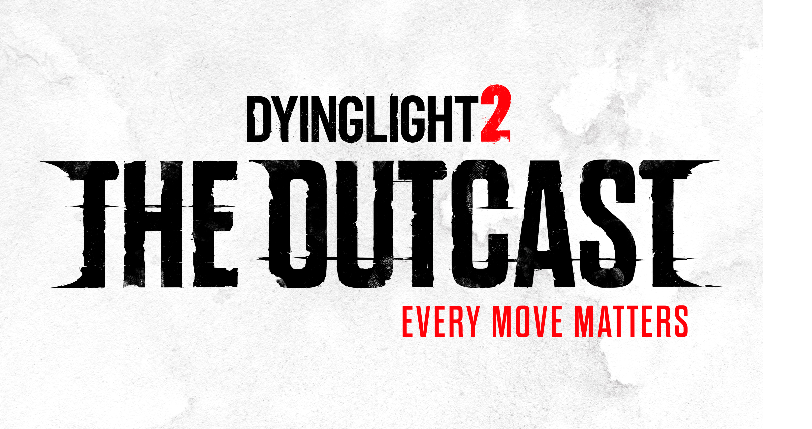
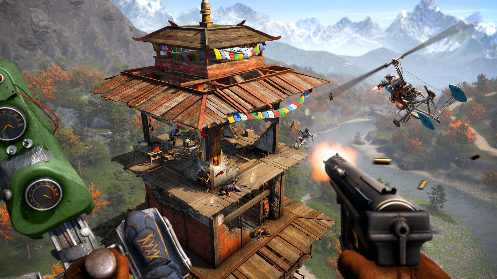

About Me
Hi, I'm a 16 year old developer based in Australia who has a passion for reverse engineering older 7th-gen games and C++. I have created many mods for games and am a engine specialist for Dying Light 2: The Outcast. TODO: Fix up this about me
Featured Work

Dying Light Restoration Project
A large mod for Dying Light with a focus on restoring cut content from the game.

Dying Light 2: The Outcast
"The Outcast" - a complex mod for Dying Light 2 which aims to restore as much content from 2019 as possible. It includes big changes in graphics/postprocessing, gameplay, weather, UI/UX, NPC models, parkour and textures. I work as a engine specialist on this project

Dying Light And DI(R)DE Mod Loader
A lightweight PAK & RPACK loader for Dying Light and Dead Island Definitive Edition made in C++.
View Code
Far Cry 4 Custom Client
A reverse engineered executable for Far Cry 4 with custom mod loading support.
View Code